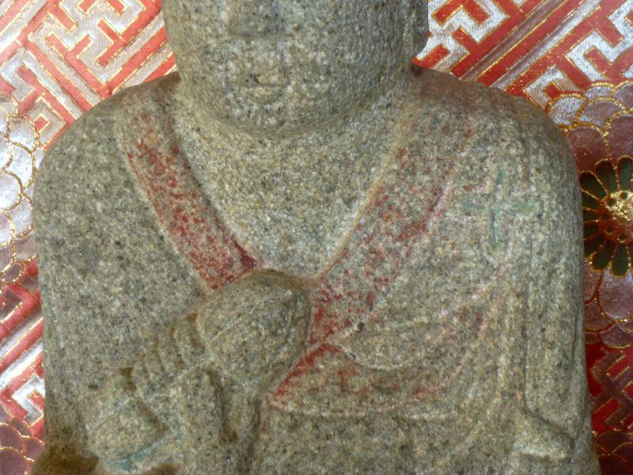

隠れキリシタンの里。十字紋の大師像・前編 < 隠れキリシタン / 愛媛県南予地方 >
一見すると閑静な山間の集落。
観光地や名勝ではないので 気にしていなければまず訪れない場所ですが、このような環境だからこそ受け継がれてきたであろう 秘密の文化が、この集落に伝わっていました。
茶堂(ちゃどう)
その場所へは県道から分かれて、何軒かの住居に続く坂道を上がっていきます。
集落の中にある茶堂
"ちゃどう"
と読みます。
南予(愛媛県南部)・高知県西部
のいずれも山間部で見られる、お堂と休憩所 小さな集会所を兼ねた施設。
坂本龍馬の脱藩ルートである、
梼原(ゆすはら、現高知県梼原町)
から
大洲(おおず、現愛媛県大洲市)
は、茶堂の本場と言えるエリアで、おそらく龍馬も 脱藩の途上に 茶堂で休憩した事でしょう。
路傍の守り仏と言えばお地蔵様こと地蔵菩薩(じぞうぼさつ)。
基本的にお地蔵さまが祀られていますが、ここは四国。お大師さま(弘法大師・空海)や ミニ四国として、八十八ヶ所の仏様が祀られていることが よくあります。
ミニ八十八ヶ所・地四国
それで言えば(↑)、こちらの茶堂は オールスター。
■ 中央に茶堂の基本仏・お地蔵さま
■ 向かって左にミニ四国八十八ヶ所として、第85番八栗寺の本尊(＝聖観世音菩薩、しょうかんぜおんぼさつ)
■ 向かって右にはお大師さま(弘法大師・空海) ※ 後述
今の時代、
「裏山に祀られている88の仏さんに手を合わせて回ると、八十八ヶ所を回ったのと同じご利益を得ることができる」
と言うと、
「行きもせずに...」「そんな楽をして...」
等、手抜きに取られがち。しかし、ミニ八十八ヶ所の意味はそうではありません。
昔々は 庶民が旅行に行けるわけではなく、四国八十八ヶ所は 今より険しい道のりであったことから、遍路旅は地元四国の人たちにとっても 憧れの旅でした。
そこで行われたのが、
"集落みんなでお金を出し合って、代表者に行ってもらう"
現在でも、沖縄など南西諸島で行われている "模合(もあい、ムエー)" のようなシステムです。
村で一番元気で 信頼がある者が、集落の期待を背負って遍路旅に出ていました。
ある者は見聞きしたものを記録したり、またある者は それぞれの札所寺院の砂を少しづつ持ち帰った(現在 同様の行為は窃盗として罰せられます)。
そして地元で土地の寄進を受けて 村内に八十八ヶ所のコピーを作り、村人たちが四国遍路に出なくても 自分のところでお四国参りができるようにした。昔は寺院が集落の中心であったため、寺の境内や そこが所有する山に開かれた場合が多かったようです。
それが "ミニ八十八ヶ所" や "地四国(じしこく)" と呼ばれるもの。決して手抜きから始まった参拝の形態ではありません。
十字紋の入ったお大師さま
四国八十八ヶ所と言えば、ご本尊さまと必ずセットになっているのが お大師さま。
本四国を回っていても必ず
本堂(ほんどう、仏)
と
大師堂(だいしどう、弘法大師・空海)
が祀られている二堂をお参りするのが基本です。
しかしこちらのお大師さま。よーく観察すると、他では見られない特徴が...

"十字紋入り大師像"
大師の左肩に 「十」字の紋章が刻まれているのが、見えるでしょうか。
こちらの大師像は、隠れキリシタン(潜伏キリシタン)の信仰に使用された可能性があります。
観音像をマリアさまに見立てて信仰した、 "マリア観音" と呼ばれる仏像は 全国各地で発見されていますが、イエスさま(？)を大師に見立てて信仰するとは、なるほど四国と思わせる潜伏信仰の形です。
日本におけるキリスト教の禁教は、
慶長17年(1612)
から
明治6年(1873)
ほぼ江戸年間。
実際には徳川家康の前の天下人・豊臣秀吉の時代からキリスト教の迫害が行われていたので、実に300年近くもの間 禁教が続きました。
その間、棄教を迫られ 止む無く改宗した者、激しい拷問などにより命を落とした者。幕府や藩の圧力に堪えかねて蜂起した 島原・天草の乱(1637)もあった。
特に島原の乱以降は 徹底した禁教政策によって、以降キリスト教を信仰することができない時代が 長く続いたが、一部は信仰を胸に秘め 仏像をキリストやマリアに見立てて、人目につかない形で信仰を継続した。
これが隠れキリシタンと呼ばれる存在です。
古くから九州と畿内が交易する中間点にあった四国には キリスト教文化が伝わっており、特に 海を隔てて九州と接する伊予國(現 愛媛県)では、潜伏信仰を行うキリシタンの方々が 所々でひっそり暮らしていたようです。
こちらの大師は 通常は袈裟が掛けられ、十字紋は隠されていたことでしょう。その時の衣の赤色が 石に移ったものと想像します。
後日、後編に続く
※ 諸説様々あります